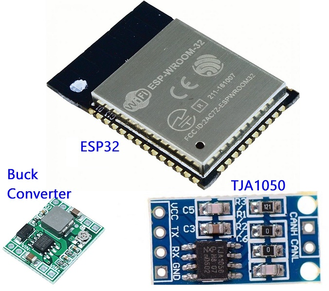
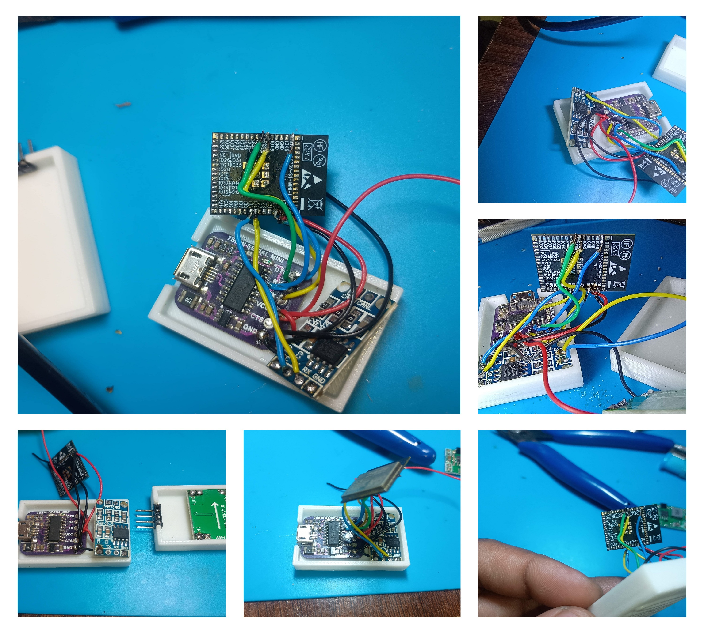
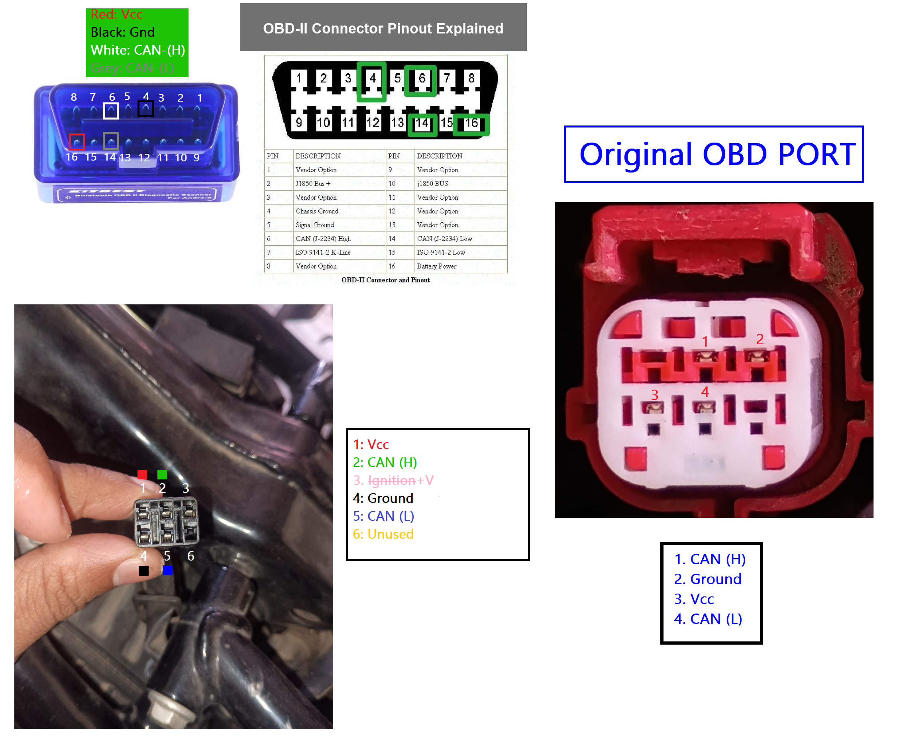
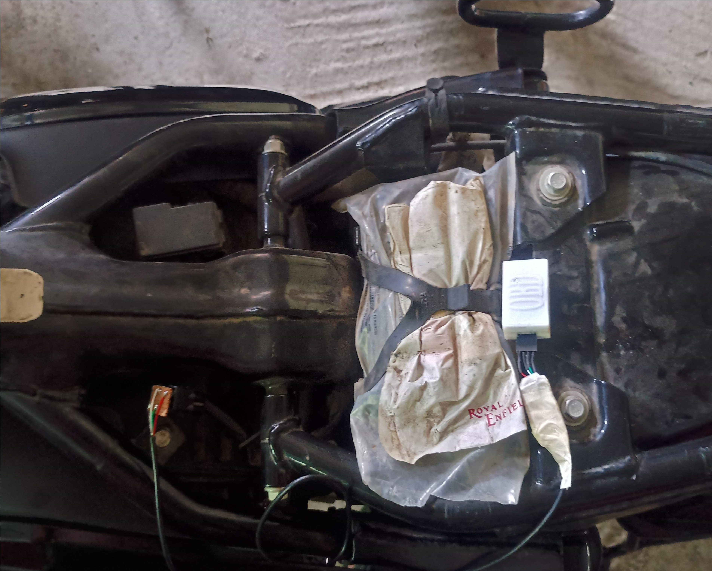
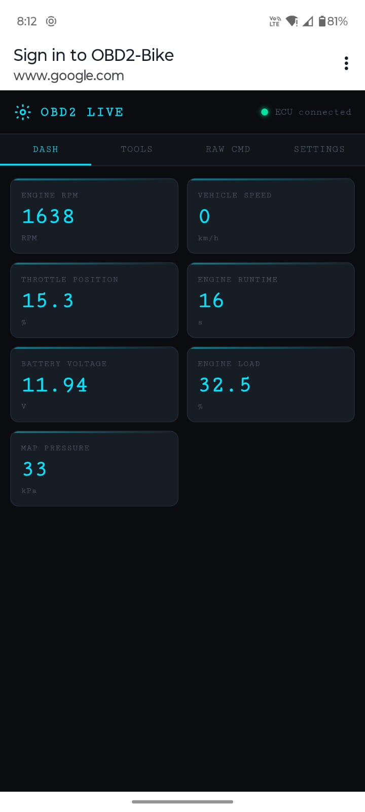
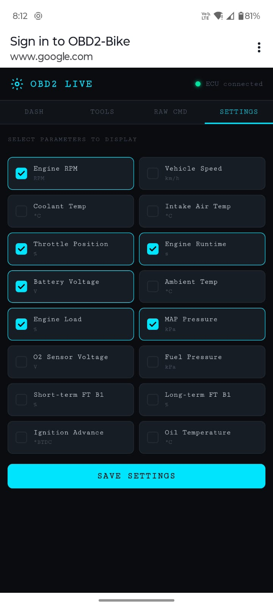
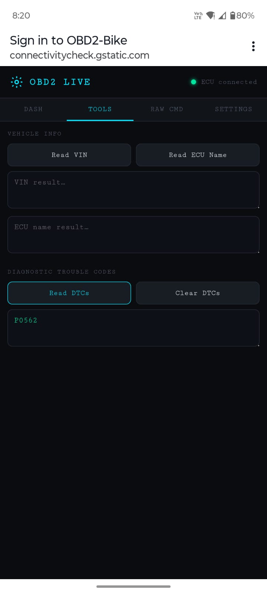
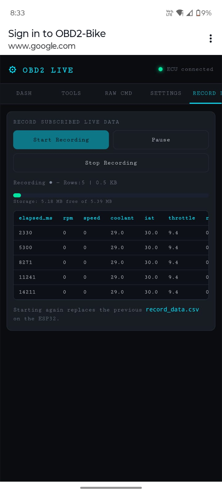
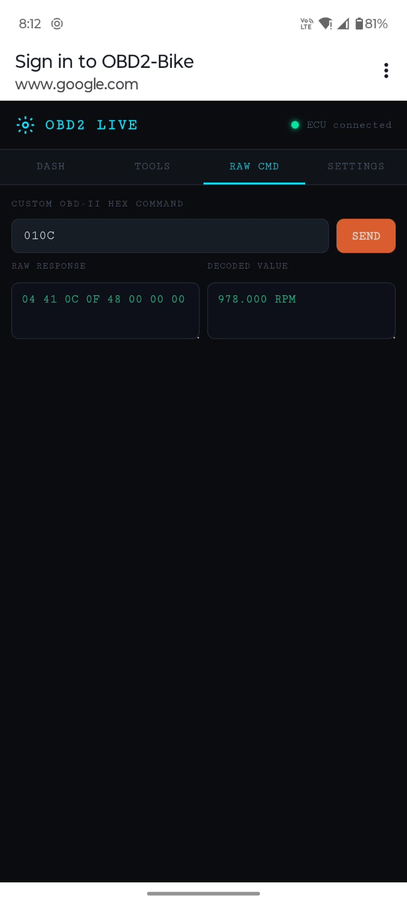

ESP32 OBD2 Scanner
for Bikes & Cars
A custom OBD2 diagnostic device built with an ESP32 and TJA1050 CAN transceiver, serving a real-time live dashboard over Wi-Fi and BLE — including a companion Android app. This documents the full journey from learning CAN Bus to a working product.
01 The Journey
This project started with curiosity about how CAN Bus works in motorcycles and cars, and ended with a fully custom OBD2 scanner with a web server and Android app. Here's how it unfolded:
PROGMEM with real-time JSON polling, live gauges, DTC read/clear, CSV recording, and VIN reading via ISO-TP multi-frame.02 How It Works
The ESP32 directly reads vehicle sensor data by speaking OBD2 over CAN Bus — no ELM327 chip in between. The TJA1050 handles the physical CAN layer.
OBD2 Request / Response Flow
// ESP32 sends request to broadcast address 0x7DF
TX CAN Frame (ID=0x7DF):
[02] [01] [0C] [00] [00] [00] [00] [00]
│ │ └── PID = 0x0C (Engine RPM)
│ └──────── Mode = 0x01 (current data)
└────────────── 2 bytes of payload follow
// Vehicle ECU responds from 0x7E8
RX CAN Frame (ID=0x7E8):
[04] [41] [0C] [1A] [F8] [00] [00] [00]
│ │ │ └──┴── Data bytes A=0x1A, B=0xF8
│ │ └──────────── PID echoed back
│ └────────────────── 0x40 + mode = positive response
└──────────────────────── 4 data bytes follow
// Decode: RPM = (256 * 0x1A + 0xF8) / 4 = 1726 RPM03 Circuit Connection Diagram
The TJA1050 CAN transceiver converts ESP32's 3.3V TTL logic CAN signals to the differential CAN Bus levels required by ISO 11898 / ISO 15765-4.
Pin Summary
| Connection | From | To | Notes |
|---|---|---|---|
| CAN-H | OBD2 Pin 6 | TJA1050 CANH | 120Ω termination may be needed if bus is short |
| CAN-L | OBD2 Pin 14 | TJA1050 CANL | Differential pair with CAN-H |
| CAN TX | ESP32 GPIO 5 | TJA1050 TXD | TTL out from ESP32 |
| CAN RX | ESP32 GPIO 4 | TJA1050 RXD | TTL in to ESP32 |
| RS / S pin | TJA1050 RS | GND | Low = normal mode (not silent/standby) |
| VCC | 5V supply | TJA1050 VCC | From OBD2 Pin 16 via regulator or USB 5V |
| GND | OBD2 Pin 4/5 | TJA1050 GND + ESP32 GND | Common ground reference |
| LED | ESP32 GPIO 17 | LED + 220Ω → GND | Startup blink indicator |
04 Circuit Build & Making Process
Upload photos of your hardware build below — circuit boards, soldering, wiring, the OBD2 adapter, and the assembled unit.






05 Wi-Fi Web Dashboard
How to Connect (Wi-Fi Mode)
Plug in the scanner
Connect the ESP32 scanner to the vehicle OBD2 port. Power LEDs will blink 5 times on startup.
Connect to Wi-Fi
On your phone or laptop, connect to OBD2-Bike (password: 12345678).
Open the browser
Navigate to http://192.168.4.1 or http://obd.local — a captive portal will redirect you automatically.
Select parameters
Go to the Settings tab, choose which parameters to monitor, and tap Save. Your selection persists in EEPROM across power cycles.
View live data
The DASH tab shows live gauges. Values update every second. "ERR" means that PID didn't respond (not supported by your vehicle's ECU).
Dashboard Screenshots





08 Supported OBD2 Parameters
| # | Parameter | PID | Formula | Unit |
|---|---|---|---|---|
| 0 | Engine RPM | 0x0C | (256A + B) / 4 | RPM |
| 1 | Vehicle Speed | 0x0D | A | km/h |
| 2 | Coolant Temp | 0x05 | A − 40 | °C |
| 3 | Intake Air Temp | 0x0F | A − 40 | °C |
| 4 | Throttle Position | 0x11 | A × 100 / 255 | % |
| 5 | Engine Runtime | 0x1F | (A × 256) + B | s |
| 6 | Battery Voltage | 0x42 | (A × 256 + B) / 1000 | V |
| 7 | Ambient Temp | 0x46 | A − 40 | °C |
| 8 | Engine Load | 0x04 | A × 100 / 255 | % |
| 9 | MAP Pressure | 0x0B | A | kPa |
| 10 | O2 Sensor Voltage | 0x14 | A × 0.005 | V |
| 11 | Fuel Pressure | 0x0A | A × 3 | kPa |
| 12 | Short-term Fuel Trim B1 | 0x06 | (A/128 − 1) × 100 | % |
| 13 | Long-term Fuel Trim B1 | 0x07 | (A/128 − 1) × 100 | % |
| 14 | Ignition Advance | 0x0E | A/2 − 64 | ° BTDC |
| 15 | Oil Temperature | 0x5C | A − 40 | °C |
0100 to see what your ECU actually supports.